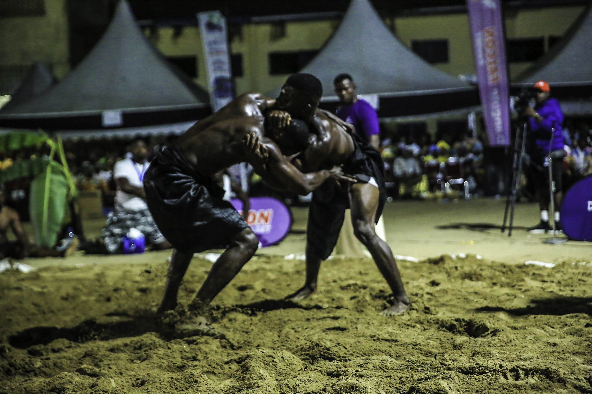

Aux origines du canton
Premiers occupants des berges du fleuve Wouri aux côtés des Bakoko, les Bassa du Wouri forment une importante communauté sociologique entourée des cantons Akwa, Déido, Bell, Bakoko et du département du Nkam. Le Canton Bassa est le plus vaste des six que compte le Wouri, s'étendant à cheval sur les arrondissements de Douala 3e et 5e. Jadis composé de 24 villages, il n'en compte plus aujourd'hui que 23, à la suite du rattachement volontaire des Banguè au Canton Bonambela (Akwa).
Peuplé à l'origine de cultivateurs, de chasseurs et de pêcheurs, dynamiques et entreprenants, les Bassa partagent avec la communauté Duala un passé commun d'environ 500 ans. Le canton s'étend sur près de 75% de la superficie du département du Wouri et abrite aujourd'hui l'une des deux grandes zones industrielles de la capitale économique du Cameroun. C'est au XIXe siècle que l'administration coloniale y établit une chefferie supérieure, confiée à la famille régnante des Log Nyoug de Ndogbong. Se sont succédé à sa tête : Njoh Lembè (1919-1934), Moussongo Isaac (1935-1941), Mbody Conrad (1967-2003, seul chef élu de la lignée) puis Mbody Gaston depuis 2007 — aujourd'hui Président Exécutif du NGONDO.
👑 Présidence 2026
Le Chef Supérieur
Le Ngondo en images

